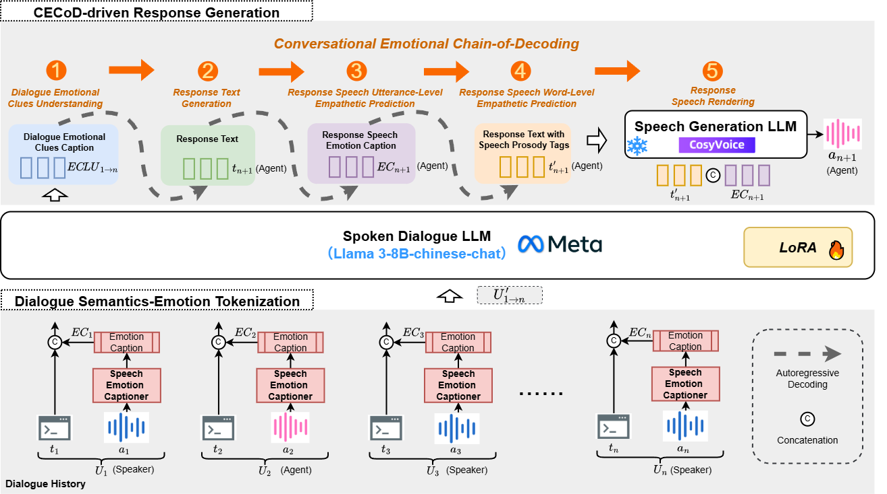

ABSTRACT
Spoken dialogue (SD), which involves generating empathetic responses during human-machine conversations (HMC), is becoming increasingly prevalent. As speech is the most natural form of HMC, state-of-the-art SD systems aim to integrate speech modalities into the SD process to develop agents capable of listening, understanding, and interacting effectively.
However, current methods often lack a comprehensive understanding of the multimodal dialogue context, leading to limited empathy in both the generated responses and synthesized speech.
To address this limitation, we propose \textbf{CECoD-Spoken}, a Conversational Emotional Chain-of-Decoding (CECoD) driven architecture implementing hierarchical empathetic reasoning through five cognitive phases: 1) Dialogue Emotional Clues Understanding, 2) Response Text Generation, 3) Response Speech Utterance-Level Empathetic Understanding, 4) Response Speech Word-Level Empathetic Understanding, and 5) Response Speech Rendering.
Through this architecture, the system progressively refines understanding from dialogue-level empathy to utterance-specific emotional resonance.
Extensive experiments show that the proposed CECoD-Spoken significantly enhances the empathy of textual responses and the emotional expressiveness of generated speech, providing an innovative solution for developing intelligent, human-centric, emotion-driven dialogue systems..
MODEL ARCHITECTURE

The overview of CECoD-Spoken. Dialogue Semantics-Emotion Tokenization seeks to obtain the discrete representation for given dialogue history. Spoken Dialogue LLM is treated as the dialogue backbone. CECoD Driven Response Generation aims to predict the response text and speech, in a serialized manner, by leveraging the novel Conversational Emotional Chain of Decoding